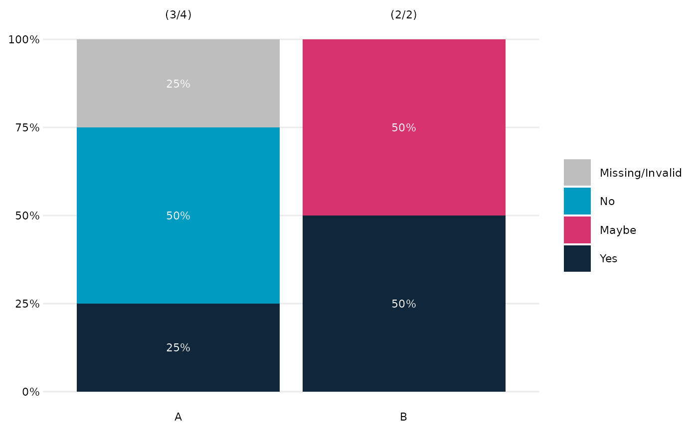
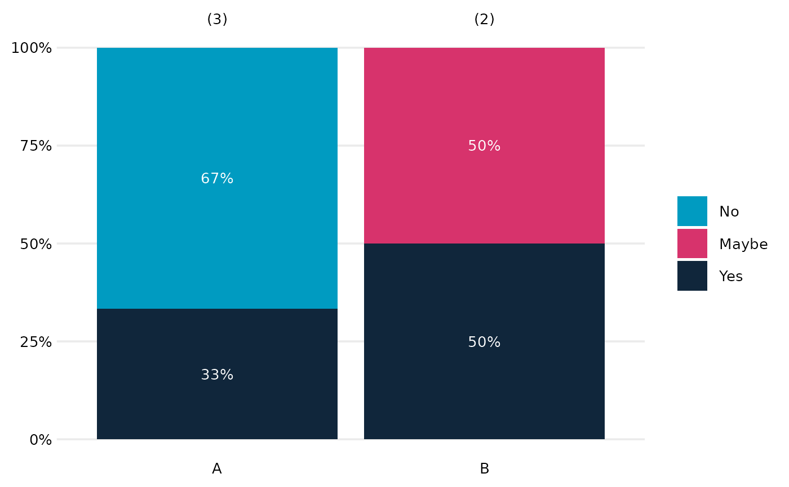
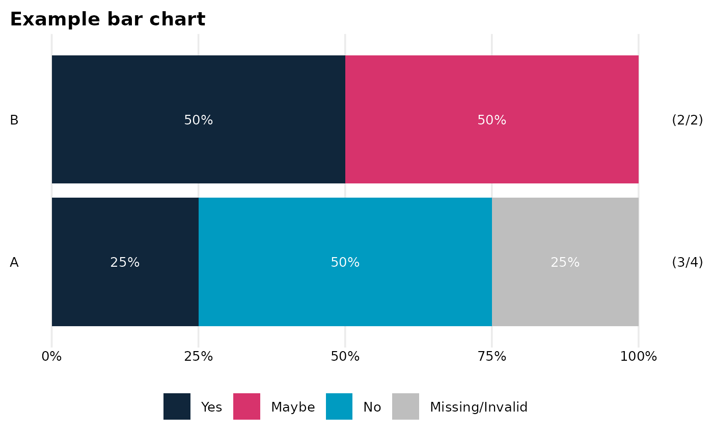

Stacked proportional bar chart in OME style (Dave's version.)
OME_stacked_bar_.RdOME_stacked_bar() builds a stacked (filled) proportional bar chart from
survey-style data using bare column names.
OME_stacked_bar_() is the programmatic interface and underlying engine,
designed for use when column names are supplied as strings or symbols.
Usage
OME_stacked_bar_(
dat,
response_var,
group_var = NULL,
facet_var = NULL,
percCut = NULL,
colo = NULL,
na.rm = FALSE,
show_counts = TRUE,
horiz = FALSE,
text_scale = 1,
fillLabText = NULL,
groupLabText = NULL,
propLabText = "Proportion of responses",
titleText = NULL,
facet_labels = NULL,
facet_layout = NULL,
separate_at = NULL,
fill_label_width = 20,
omitGroupLabels = FALSE,
group_label_width = NULL,
group_labels = NULL
)
OME_stacked_bar(dat, response_var, group_var = NULL, facet_var = NULL, ...)Arguments
- dat
A data frame.
- response_var
Bare column name giving the response categories (used for fill).
- group_var
Optional bare column name defining separate bars.
- facet_var
Optional bare column name used for faceting. All variables should be factors (characters may work but are not guaranteed).
- percCut
Numeric scalar (0-100). Cutoff below which percentages are not shown in bar segments. Default
5; use a number >100 to suppress all percentages.- colo
Optional character vector of fill colours (one per response level). If
NULL(default), colours are taken fromOMESurvey::get_OME_colours(type = "distinct"). Whenna.rm = FALSE, a grey colour is prepended for the"Missing"level.- na.rm
Logical. If
TRUE, removeNAresponses; ifFALSE(default) convert them to"Missing"and treat as an additional response level.- show_counts
Logical; whether to display (n) counts for each bar. Defaults to TRUE. Needs care if used with faceting.
- horiz
Logical (default
FALSE). IfTRUE, flip coordinates so bars are horizontal and place the legend below the plot.- text_scale
Positive number (default
1) scaling the size of percentage labels.- fillLabText
Optional legend title for the fill variable. If
NULL(default) the title is removed; if""the name ofresponse_varis used.- groupLabText
Optional label for the bar/group axis. If
NULLthe label is removed; if""the name ofgroup_varis used.- propLabText
Label for the proportion axis. Default
"Proportion of responses".- titleText
Optional plot title. Default
NULLremoves the title.- facet_labels
Optional named character vector used as a labeller for facets (names are original facet values, values are labels to display). Default
NULLuses the raw facet values.- facet_layout
Optional character. If
"1row"or"1col"the facets are arranged in a single row or column. Otherwise (or ifNULL) the default facet layout is used. Should be"1col"if used withshow_counts=TRUE.- separate_at
Optional integer specifying where to draw a horizontal separation line between groups defined by
group_var.If positive n the separation line is after the first n categories
If negative n the separation line is before the n-th last category. Default
NULLor 0 omits the line.
- fill_label_width
Optional integer. Width (in characters) used when wrapping fill labels with
stringr::str_wrap(). Default is 20.- omitGroupLabels
Optional logical controlling whether to omit group labels. Helpful when group_var=NULL. Default FALSE.
- group_label_width
Optional integer. Width (in characters) used when wrapping group labels with
stringr::str_wrap(). Default isNULL, to not wrap.- group_labels
Optional named character vector providing alternative labels for the grouping variable. Should be of the form
c(level1 = "Label 1", level2 = "Label 2"). Default isNULL, which uses the factor's existing levels.- ...
Additional arguments passed to the underlying engine.
Details
The plot displays:
relative frequencies of the response variable,
optional subdivision into separate bars,
optional faceting,
percentage labels inside bar segments (above a cutoff),
optional
(n)labels showing the number of responses per bar. (though these need care if combined with faceting)
OME_stacked_bar() uses tidy evaluation;
OME_stacked_bar_() uses standard evaluation and is safe for loops and
programmatic workflows.
Note
Future/possible extensions include
edit show_counts argument to allow optional (m/n) formatting of labels (where m = # non-missing values and n = # values)
adding a count_scope = c("facet","global") argument so (n) labelling groups over facets (seems unlikely to be very helpful?)
much deeper fiddling to let (n) labelling work with multi-column faceting.
Examples
# Minimal example data
dat <- tibble::tibble(
Response = factor(c("Yes", "No", "No", NA, "Yes", "Maybe"),
levels = c("No", "Maybe", "Yes")),
Group = factor(c("A", "A", "A", "A", "B", "B"))
)
# Basic example (NA is made explicit)
OME_stacked_bar(dat, Response, Group)

# NA's ignored
OME_stacked_bar(dat, Response, Group, na.rm=TRUE)

# Horizontal version with a title
OME_stacked_bar(
dat,
response_var = Response,
group_var = Group,
horiz = TRUE,
titleText = "Example bar chart"
)

# Example programmatic use
if (FALSE) { # \dontrun{
vars <- c("Gender", "Ethnicity", "FSM")
for (v in vars) {
p <- OME_stacked_bar_(
dat = survey_df,
response_var = "some_variable",
group_var = v
)
print(p)
}
} # }